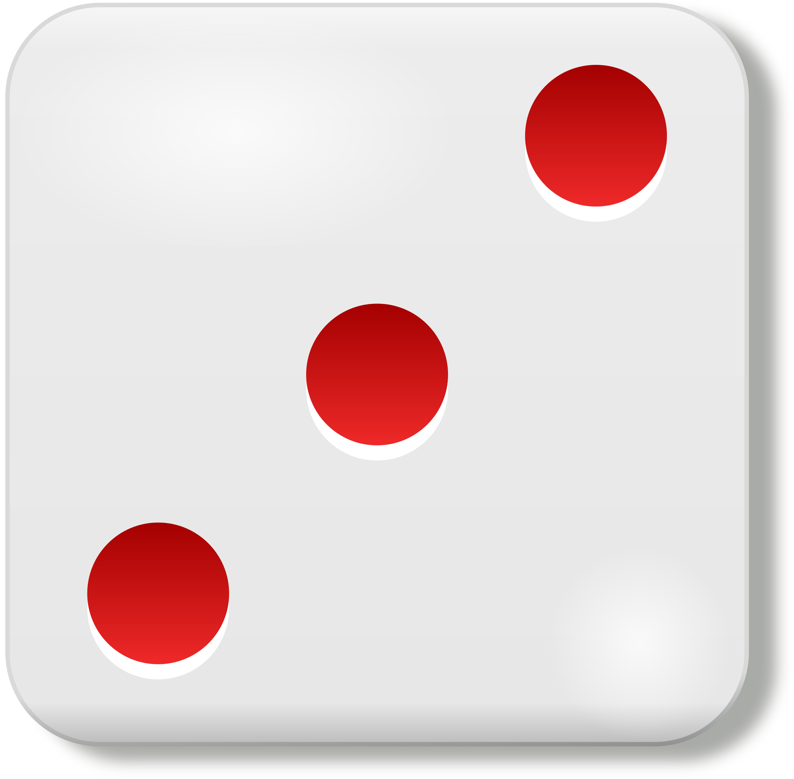

  <!--
  Generated template for the DadoJugadorPage page.

  See http://ionicframework.com/docs/components/#navigation for more info on
  Ionic pages and navigation.
-->

  <ion-content padding>
      

      <ion-row>
          <ion-col>
              <button class="boton2">
              <ion-card text-wrap ion-item>
                  
                  <div class="card-title">{{jugador?.data[0]["apodo"]}}</div>
              </ion-card>
              </button>
              <button class="boton2" (click)="getRandom()">
                  <ion-card text-wrap ion-item *ngFor="let rc of randomCard">
                      
                      <div class="card-title">{{rc.reto1}}</div>
                  </ion-card>
              </button>

          </ion-col>
          <ion-col>
              <button class="boton2" (click)="getRandom()">
                  <ion-card text-wrap ion-item *ngFor="let rc of randomCard">
                      
                      <div class="card-title">{{rc.accion}}</div>
                  </ion-card>
              </button>

              <button class="boton2" (click)="getRandom()">
                  <ion-card text-wrap ion-item *ngFor="let rc of randomCard">
                      
                      <div class="card-title">{{rc.reto2}}</div>
                  </ion-card>
              </button>
          </ion-col>
      </ion-row>

      <ion-list>
          <ion-item style="text-align: center">
                  <ion-row style="align-self: center">
                      <ion-col>
                          <ion-icon [name]=estado (click)="estadoSwap()"></ion-icon>
                      </ion-col>

                      <ion-col >
                          <ion-icon [color]=refreshColor name="refresh" (click)="stop()"></ion-icon>
                      </ion-col>
                  </ion-row>
          </ion-item>
          <ion-item>
              <p>
                  {{_minutos}}:{{_segundos}}.{{_centesimas}}
              </p>
          </ion-item>
      </ion-list>

  </ion-content>


